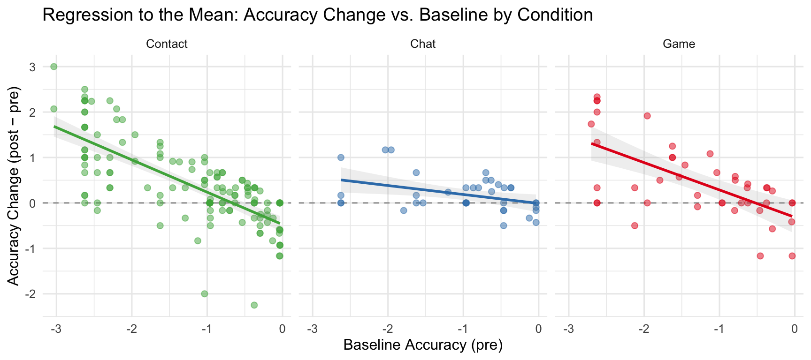
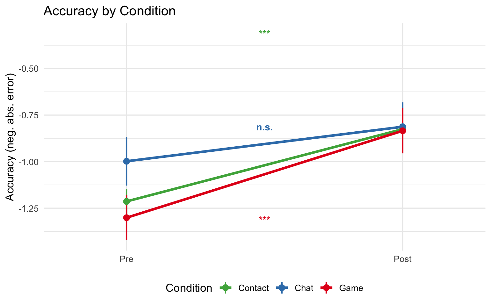
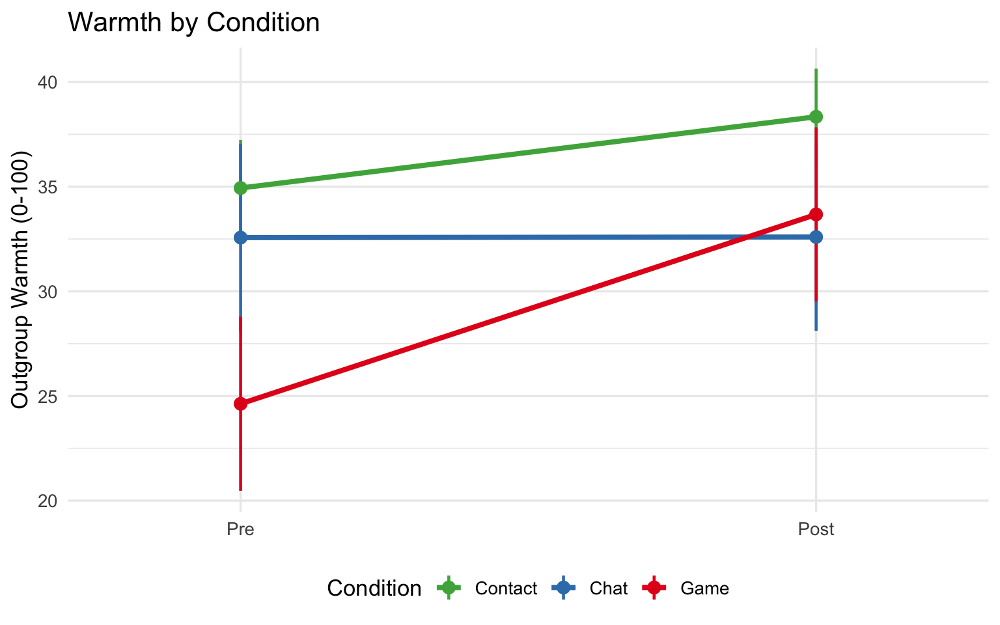
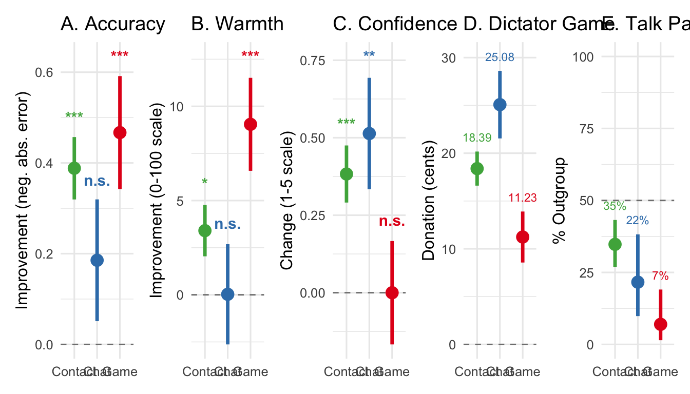
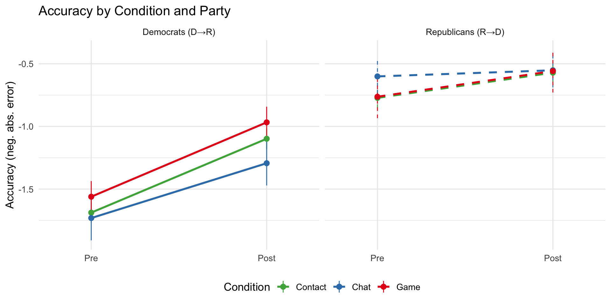
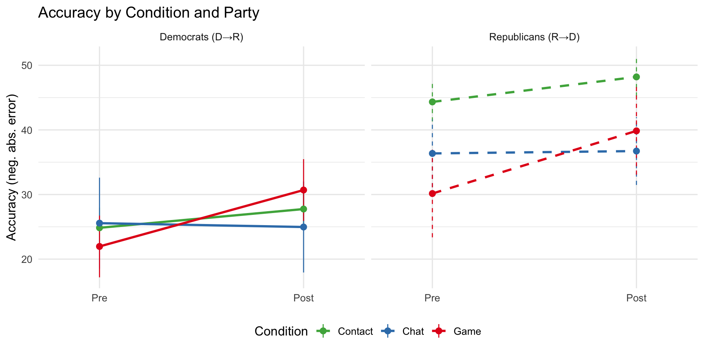

We recruited 221 participants from Prolific: 141 in the Contact condition, 37 in the Chat condition, and 43 in the Game condition (mean age = 42.90, 48% female).
# Check randomization: are conditions balanced on baseline measures?bal_acc <-aov(accuracy_pre ~ treatment, data = dat)bal_warm <-aov(warmth_outgroup_pre ~ treatment, data = dat)bal_ext <-aov(political_extremism ~ treatment, data = dat)bal_acc_p <-summary(bal_acc)[[1]][["Pr(>F)"]][1]bal_warm_p <-summary(bal_warm)[[1]][["Pr(>F)"]][1]bal_ext_p <-summary(bal_ext)[[1]][["Pr(>F)"]][1]
Conditions did not differ significantly on baseline accuracy (F = 0.291), baseline warmth (F = 0.078), or political extremism (F = 0.633), supporting successful randomization.
Differential engagement / cheating check
Code
# Survey phase: tab switches and hidden time (same for all conditions)eng_survey_aov_switch <-aov(tab_switch_count ~ treatment, data = dat)eng_survey_aov_hidden <-aov(I(time_hidden_ms /1000) ~ treatment, data = dat)eng_survey_switch_p <-summary(eng_survey_aov_switch)[[1]][["Pr(>F)"]][1]eng_survey_hidden_p <-summary(eng_survey_aov_hidden)[[1]][["Pr(>F)"]][1]# Intervention phase: tab switches and time in intervention windoweng_bot_aov_switch <-aov(tab_switch_count_bot ~ treatment, data = dat)eng_bot_aov_hidden <-aov(I(time_hidden_ms_bot /60000) ~ treatment, data = dat)eng_bot_switch_p <-summary(eng_bot_aov_switch)[[1]][["Pr(>F)"]][1]eng_bot_hidden_p <-summary(eng_bot_aov_hidden)[[1]][["Pr(>F)"]][1]# Pairwise for bot tab switches (the only marginally significant survey metric)eng_bot_switch_tukey <- dat %>%tukey_hsd(tab_switch_count_bot ~ treatment)if (!pool_controls) { eng_bot_contact_game_p <- eng_bot_switch_tukey %>%filter(group1 =="Contact", group2 =="Game") %>%pull(p.adj)} else { eng_bot_contact_game_p <- eng_bot_switch_tukey %>%filter(group1 =="Contact", group2 =="Control") %>%pull(p.adj)}# Summary tableeng_summary <- dat %>%group_by(treatment) %>%summarise(`Survey switches (M)`=mean(tab_switch_count, na.rm =TRUE),`Survey hidden (sec, M)`=mean(time_hidden_ms /1000, na.rm =TRUE),`Intervention switches (M)`=mean(tab_switch_count_bot, na.rm =TRUE),`Intervention time in window (min, M)`=mean(time_hidden_ms_bot /60000, na.rm =TRUE),.groups ="drop" )
Code
eng_summary %>%mutate(across(where(is.double), ~numformat(.x))) %>%rename(Condition = treatment) %>%gt() %>%tab_header(title ="Engagement by Condition") %>%tab_footnote("Survey phase: tab switches and hidden time during the questionnaire. Intervention phase: switches and time during the treatment window.",locations =cells_title() )
Engagement by Condition1
Condition
Survey switches (M)
Survey hidden (sec, M)
Intervention switches (M)
Intervention time in window (min, M)
Contact
0.21
3.13
1.79
6.35
Chat
0.24
4.83
1.97
0.65
Game
0.14
0.77
0.23
0.13
1 Survey phase: tab switches and hidden time during the questionnaire. Intervention phase: switches and time during the treatment window.
Survey phase (left the survey screen): conditions did not differ in tab switches (F = 0.828) or hidden time (F = 0.387), ruling out differential cheating during measurement.
Intervention phase: time spent in the intervention window differed across conditions (F < .001), but all conditions were fixed at 10 minutes, so differences in the hidden-time metric reflect how participants engaged within the window (e.g., Contact participants may have kept the chat window active more continuously), not differential exposure time. Intervention tab switches were marginally higher in Contact vs. Game (p = 0.009, Tukey-corrected), consistent with the chatbot task requiring active back-and-forth engagement. No evidence of differential cheating by condition.
Outlier and regression-to-mean check
Code
dat <- dat %>%mutate(acc_change = accuracy_post - accuracy_pre,warm_change = warmth_outgroup_post - warmth_outgroup_pre )# Within-condition z-scoresdat <- dat %>%group_by(treatment) %>%mutate(acc_z =scale(acc_change)[, 1],warm_z =scale(warm_change)[, 1] ) %>%ungroup()# Flag outliers (|z| > 2.5)outliers_acc <- dat %>%filter(abs(acc_z) >2.5)outliers_warm <- dat %>%filter(abs(warm_z) >2.5)# Regression-to-mean evidence: correlation of pre with change, by conditionrtm_cors <- dat %>%group_by(treatment) %>%summarise(r_pre_change =cor(accuracy_pre, acc_change, use ="complete.obs"),pct_at_floor =mean(accuracy_pre <=-2) *100,.groups ="drop" )# Key numbers for textcontact_rtm_r <- rtm_cors %>%filter(treatment =="Contact") %>%pull(r_pre_change)rtm_cors_text <- rtm_cors %>%mutate(s =paste0(treatment, ": *r* = ", numformat(r_pre_change))) %>%pull(s) %>%paste(collapse =", ")# Warm outlier (only relevant when pool_controls = FALSE and Game exists)game_warm_outlier_id <-"R_1QhUfoO3j0KddYt"if (!pool_controls) { game_rtm_r <- rtm_cors %>%filter(treatment =="Game") %>%pull(r_pre_change) chat_rtm_r <- rtm_cors %>%filter(treatment =="Chat") %>%pull(r_pre_change) game_warm_with <-mean(dat$warm_change[dat$treatment =="Game"], na.rm =TRUE) game_warm_without <-mean(dat$warm_change[dat$treatment =="Game"& dat$ResponseId != game_warm_outlier_id], na.rm =TRUE)} else { game_rtm_r <- chat_rtm_r <-NA_real_ game_warm_with <- game_warm_without <-NA_real_}
Outliers. 5 participants had accuracy change scores more than 2.5 SD from their condition mean (Contact: n=3, Chat: n=2). 11 participants had outlying warmth changes (Contact: n=7, Chat: n=2, Game: n=2, including one Game participant with a warmth change of +100 points. Removing that participant reduces the Game warmth mean from 9.05 to 6.88).
Baseline and change. Within each condition, participants who started with the lowest accuracy tended to show the largest improvements (Contact: r = -0.73, Chat: r = -0.40, Game: r = -0.64). This is mechanically expected in any pre-post design: those furthest from the true value have more room to improve. Critically, this pattern is similar across all conditions, so it does not favor one condition over another. The condition comparison (the DiD contrast and ANCOVA below) correctly accounts for baseline by design, making it the appropriate test of whether conditions differ in their causal effect.
Code
ggplot(dat, aes(x = accuracy_pre, y = acc_change, color = treatment)) +geom_hline(yintercept =0, linetype ="dashed", color ="gray60") +geom_point(alpha =0.5, size =2) +geom_smooth(method ="lm", se =TRUE, alpha =0.15) +scale_color_manual(values = condition_colors, name ="Condition") +facet_wrap(~ treatment) +labs(x ="Baseline Accuracy (pre)",y ="Accuracy Change (post − pre)",title ="Regression to the Mean: Accuracy Change vs. Baseline by Condition" ) +theme_minimal(base_size =12) +theme(legend.position ="none")

Accuracy change vs. baseline accuracy by condition. Strong negative slopes indicate regression to the mean: participants who started most inaccurate improved most, regardless of condition.
Across the full sample, accuracy improved (t(220) = 6.72, p < .001, d = 0.45), outgroup warmth increased (t(220) = 3.58, p < .001, d = 0.24), and confidence changed (t(220) = 4.46, p < .001, d = 0.30).
Condition Differences (Main Analysis)
The primary question is whether the Contact condition shows greater pre-post improvement than the two control conditions (Chat, Game) pooled together. We use a mixed-effects model with a time × treatment interaction, and test the key contrast: Contact Δ vs. average of Chat Δ and Game Δ.
Accuracy
Code
accuracy_long <- dat %>%select(ResponseId, treatment, learner_party, accuracy_pre, accuracy_post) %>%pivot_longer(c(accuracy_pre, accuracy_post),names_to ="time", names_pattern ="accuracy_(pre|post)",values_to ="accuracy") %>%mutate(time =factor(time, levels =c("pre", "post")))# Model: time × treatment (reference = Contact)m_acc <-lmer(accuracy ~ time * treatment + (1| ResponseId), data = accuracy_long)# Pre-post differences within each conditionemm_acc_by_cond <-emmeans(m_acc, ~ time | treatment)acc_contrasts <-contrast(emm_acc_by_cond, "revpairwise", by ="treatment") %>%as_tibble() # positive = improvement (post - pre)# Full grid for DiD contrasts — adaptive to pool_controls toggle# Grid order (3-cond): pre×Contact, post×Contact, pre×Chat, post×Chat, pre×Game, post×Game# Grid order (pooled): pre×Contact, post×Contact, pre×Control, post×Controlemm_acc_full <-emmeans(m_acc, ~ time * treatment)pull_did <-function(tbl, nm, col) tbl %>%filter(contrast == nm) %>%pull({{ col }})if (pool_controls) { acc_did <-contrast(emm_acc_full, list(`Contact vs. Control`=c(1, -1, -1, 1) # Control Δ - Contact Δ ... sign: positive = Control > Contact ))# flip sign so positive = Contact improved more acc_did_tbl <- acc_did %>%as_tibble() %>%mutate(estimate =-estimate) acc_main_b <-pull_did(acc_did_tbl, "Contact vs. Control", estimate) acc_main_se <-pull_did(acc_did_tbl, "Contact vs. Control", SE) acc_main_p <-pull_did(acc_did_tbl, "Contact vs. Control", p.value) acc_chat_vs_contact_b <-NA_real_; acc_chat_vs_contact_p <-NA_real_ acc_game_vs_contact_b <-NA_real_; acc_game_vs_contact_p <-NA_real_ acc_chat_vs_game_b <-NA_real_; acc_chat_vs_game_p <-NA_real_} else { acc_did <-contrast(emm_acc_full, list(`Contact vs. pooled controls`=c(-1, 1, 0.5, -0.5, 0.5, -0.5),`Chat vs. Contact`=c( 1, -1, -1, 1, 0, 0 ),`Game vs. Contact`=c( 1, -1, 0, 0, -1, 1 ),`Chat vs. Game`=c( 0, 0, -1, 1, 1, -1 ) )) acc_did_tbl <- acc_did %>%as_tibble() acc_main_b <-pull_did(acc_did_tbl, "Contact vs. pooled controls", estimate) acc_main_se <-pull_did(acc_did_tbl, "Contact vs. pooled controls", SE) acc_main_p <-pull_did(acc_did_tbl, "Contact vs. pooled controls", p.value) acc_chat_vs_contact_b <-pull_did(acc_did_tbl, "Chat vs. Contact", estimate) acc_chat_vs_contact_p <-pull_did(acc_did_tbl, "Chat vs. Contact", p.value) acc_game_vs_contact_b <-pull_did(acc_did_tbl, "Game vs. Contact", estimate) acc_game_vs_contact_p <-pull_did(acc_did_tbl, "Game vs. Contact", p.value) acc_chat_vs_game_b <-pull_did(acc_did_tbl, "Chat vs. Game", estimate) acc_chat_vs_game_p <-pull_did(acc_did_tbl, "Chat vs. Game", p.value)}
The time × treatment interaction tests whether conditions differed in accuracy improvement.
Code
acc_contrasts %>%select(Condition = treatment,`Pre→Post Improvement`= estimate, SE, df, `t-ratio`= t.ratio, `p-value`= p.value) %>%mutate(`Pre→Post Improvement`=numformat(`Pre→Post Improvement`),SE =numformat(SE),df =numformat(df, 0),`t-ratio`=numformat(`t-ratio`),`p-value`=map_chr(`p-value`, pformat) ) %>%gt() %>%tab_header(title ="Accuracy: Pre-Post Improvement by Condition") %>%tab_footnote("Positive = improvement. Estimated from mixed-effects model (Contact as reference).",locations =cells_title())
Accuracy: Pre-Post Improvement by Condition1
Condition
Pre→Post Improvement
SE
df
t-ratio
p-value
Contact
0.39
0.07
218
5.65
< .001
Chat
0.19
0.13
218
1.38
= 0.168
Game
0.47
0.12
218
3.75
< .001
1 Positive = improvement. Estimated from mixed-effects model (Contact as reference).
Primary test: Contact vs. pooled controls: b = 0.06, SE = 0.11, p = 0.588. Pairwise: Chat vs. Contact (b = -0.20, p = 0.180); Game vs. Contact (b = 0.08, p = 0.581); Chat vs. Game (b = -0.28, p = 0.126).
Model choice: lmer vs. ANCOVA
Code
# Pre-post correlation by condition (drives the key tradeoff between lmer and ANCOVA)prepost_cors <- dat %>%group_by(treatment) %>%summarise(r_prepost =cor(accuracy_pre, accuracy_post, use ="complete.obs"),.groups ="drop" )# ANCOVA: regress post on pre + treatmentancova_acc <-lm(accuracy_post ~ accuracy_pre + treatment, data = dat)ancova_pre_coef <-coef(ancova_acc)["accuracy_pre"]ancova_pre_se <-summary(ancova_acc)$coefficients["accuracy_pre", "Std. Error"]ancova_pre_p <-summary(ancova_acc)$coefficients["accuracy_pre", "Pr(>|t|)"]# Test homogeneity of regression slopes (pre × condition interaction)ancova_hom <-lm(accuracy_post ~ accuracy_pre * treatment, data = dat)ancova_hom_p <-anova(ancova_acc, ancova_hom)$`Pr(>F)`[2]if (!pool_controls) { ancova_game_b <-coef(ancova_acc)["treatmentGame"] ancova_chat_b <-coef(ancova_acc)["treatmentChat"] ancova_game_p <-summary(ancova_acc)$coefficients["treatmentGame", "Pr(>|t|)"] ancova_chat_p <-summary(ancova_acc)$coefficients["treatmentChat", "Pr(>|t|)"]} else { ancova_game_b <-NA_real_; ancova_chat_b <-NA_real_ ancova_game_p <-NA_real_; ancova_chat_p <-NA_real_}
For a randomized pre-post design, both lmer(accuracy ~ time * treatment + (1|id)) and lm(accuracy_post ~ accuracy_pre + treatment) (ANCOVA) are valid, but they make different assumptions. ANCOVA is generally preferred in randomized experiments [@vickers2001analysing]. It regresses the post-score on the pre-score as a covariate, removing pre-score variance from the residuals and increasing statistical power. In our data, the pre-score coefficient is b = 0.38 (SE = 0.05, p < .001): substantially less than 1.0, which means there is regression to the mean and ANCOVA extracts more power than a change-score approach.
lmer (lmer(y ~ time * treatment + (1|id))) models both time points jointly with a random intercept per participant. The random intercept implicitly assumes the pre-score coefficient equals 1, equivalent to an ANCOVA with b = 1 for pre. When the true pre-post correlation is well below 1 — here r = 0.40 (Contact), r = 0.87 (Chat), r = 0.48 (Game) — the lmer model leaves avoidable residual variance on the table.
Homogeneity of slopes: ANCOVA requires the pre → post regression slope to be the same in all conditions. The pre × treatment interaction test gives p < .001. This assumption is borderline violated; lmer is more robust in this case.
Both models agree: conditions do not differ significantly in accuracy improvement. For the pre-registered full study, we will use ANCOVA as the primary specification and lmer as a robustness check.
Code
# Build a side-by-side comparison table: lmer DiD vs ANCOVAancova_se_mat <-summary(ancova_acc)$coefficientsif (pool_controls) {# Only one contrast available: Contact vs. Control ancova_ctrl_b <-coef(ancova_acc)["treatmentControl"] ancova_ctrl_se <- ancova_se_mat["treatmentControl", "Std. Error"] ancova_ctrl_p <- ancova_se_mat["treatmentControl", "Pr(>|t|)"] model_compare <-tribble(~Contrast, ~`lmer b`, ~`lmer SE`, ~`lmer p`,~`ANCOVA b`, ~`ANCOVA SE`, ~`ANCOVA p`,"Contact vs. Control", acc_main_b,pull_did(acc_did_tbl, "Contact vs. Control", SE), acc_main_p,-ancova_ctrl_b, # flip sign: positive = Contact improved more ancova_ctrl_se, ancova_ctrl_p )} else { model_compare <-tribble(~Contrast, ~`lmer b`, ~`lmer SE`, ~`lmer p`,~`ANCOVA b`, ~`ANCOVA SE`, ~`ANCOVA p`,"Contact vs. pooled controls", acc_main_b,pull_did(acc_did_tbl, "Contact vs. pooled controls", SE), acc_main_p,-(0.5* ancova_chat_b +0.5* ancova_game_b),NA_real_, NA_real_,"Chat vs. Contact", acc_chat_vs_contact_b,pull_did(acc_did_tbl, "Chat vs. Contact", SE), acc_chat_vs_contact_p, ancova_chat_b, ancova_se_mat["treatmentChat", "Std. Error"], ancova_chat_p,"Game vs. Contact", acc_game_vs_contact_b,pull_did(acc_did_tbl, "Game vs. Contact", SE), acc_game_vs_contact_p, ancova_game_b, ancova_se_mat["treatmentGame", "Std. Error"], ancova_game_p,"Chat vs. Game", acc_chat_vs_game_b,pull_did(acc_did_tbl, "Chat vs. Game", SE), acc_chat_vs_game_p, ancova_chat_b - ancova_game_b,NA_real_, NA_real_ )}model_compare %>%mutate(across(c(`lmer b`, `lmer SE`, `ANCOVA b`, `ANCOVA SE`),~ifelse(is.na(.x), "—", numformat(.x))),`lmer p`=map_chr(`lmer p`, ~ifelse(is.na(.x), "—", pformat(.x))),`ANCOVA p`=map_chr(`ANCOVA p`, ~ifelse(is.na(.x), "—", pformat(.x)))) %>%gt() %>%tab_header(title ="lmer vs. ANCOVA: Accuracy Condition Comparisons") %>%tab_spanner(label ="lmer (DiD contrast)", columns =c(`lmer b`, `lmer SE`, `lmer p`)) %>%tab_spanner(label ="ANCOVA (lm post ~ pre + condition)", columns =c(`ANCOVA b`, `ANCOVA SE`, `ANCOVA p`)) %>%tab_footnote("lmer estimates from emmeans DiD contrasts on the full time × treatment grid. ANCOVA estimates are regression coefficients (contact = reference). Contact vs. pooled ANCOVA SE omitted (non-standard linear combination).",locations =cells_title())
lmer vs. ANCOVA: Accuracy Condition Comparisons1
Contrast
lmer (DiD contrast)
ANCOVA (lm post ~ pre + condition)
lmer b
lmer SE
lmer p
ANCOVA b
ANCOVA SE
ANCOVA p
Contact vs. pooled controls
0.06
0.11
= 0.588
0.02
—
—
Chat vs. Contact
-0.20
0.15
= 0.180
-0.07
0.11
= 0.538
Game vs. Contact
0.08
0.14
= 0.581
0.02
0.10
= 0.817
Chat vs. Game
-0.28
0.18
= 0.126
-0.09
—
—
1 lmer estimates from emmeans DiD contrasts on the full time × treatment grid. ANCOVA estimates are regression coefficients (contact = reference). Contact vs. pooled ANCOVA SE omitted (non-standard linear combination).
Code
emm_acc_tbl <-as_tibble(emm_acc_by_cond) %>%mutate(time =factor(time, levels =c("pre", "post")))p_acc <-ggplot(emm_acc_tbl,aes(x = time, y = emmean, group = treatment, color = treatment)) +geom_line(linewidth =1.4) +geom_pointrange(aes(ymin = emmean - SE, ymax = emmean + SE), size =0.6, linewidth =0.8) +# Significance stars per condition (spaced by row index)geom_text(data = acc_contrasts %>%mutate(x =1.5,y =max(emm_acc_tbl$emmean) +0.5,label =p_to_stars(p.value),y_offset = (row_number() -1) *-0.5 ),aes(x = x, y = y + y_offset, label = label, color = treatment),size =4, fontface ="bold", show.legend =FALSE, inherit.aes =FALSE) +scale_color_manual(values = condition_colors, name ="Condition") +scale_x_discrete(labels =c("Pre", "Post"), expand =expansion(add =0.3)) +labs(y ="Accuracy (neg. abs. error)", x =NULL, title ="Accuracy by Condition") +theme_minimal(base_size =13) +theme(legend.position ="bottom")p_acc

Accuracy (negative absolute error) by condition and time. Points show estimated marginal means ± SE from the mixed-effects model.
warmth_long <- dat %>%select(ResponseId, treatment, learner_party, warmth_outgroup_pre, warmth_outgroup_post) %>%pivot_longer(c(warmth_outgroup_pre, warmth_outgroup_post),names_to ="time", names_pattern ="warmth_outgroup_(pre|post)",values_to ="warmth") %>%mutate(time =factor(time, levels =c("pre", "post")))m_warm <-lmer(warmth ~ time * treatment + (1| ResponseId), data = warmth_long)emm_warm_by_cond <-emmeans(m_warm, ~ time | treatment)warm_contrasts <-contrast(emm_warm_by_cond, "revpairwise", by ="treatment") %>%as_tibble()emm_warm_full <-emmeans(m_warm, ~ time * treatment)if (pool_controls) { warm_did <-contrast(emm_warm_full, list(`Contact vs. Control`=c(1, -1, -1, 1) )) warm_did_tbl <- warm_did %>%as_tibble() %>%mutate(estimate =-estimate) warm_main_b <-pull_did(warm_did_tbl, "Contact vs. Control", estimate) warm_main_se <-pull_did(warm_did_tbl, "Contact vs. Control", SE) warm_main_p <-pull_did(warm_did_tbl, "Contact vs. Control", p.value) warm_chat_vs_contact_b <-NA_real_; warm_chat_vs_contact_p <-NA_real_ warm_game_vs_contact_b <-NA_real_; warm_game_vs_contact_p <-NA_real_ warm_chat_vs_game_b <-NA_real_; warm_chat_vs_game_p <-NA_real_} else { warm_did <-contrast(emm_warm_full, list(`Contact vs. pooled controls`=c(-1, 1, 0.5, -0.5, 0.5, -0.5),`Chat vs. Contact`=c( 1, -1, -1, 1, 0, 0 ),`Game vs. Contact`=c( 1, -1, 0, 0, -1, 1 ),`Chat vs. Game`=c( 0, 0, -1, 1, 1, -1 ) )) warm_did_tbl <- warm_did %>%as_tibble() warm_main_b <-pull_did(warm_did_tbl, "Contact vs. pooled controls", estimate) warm_main_se <-pull_did(warm_did_tbl, "Contact vs. pooled controls", SE) warm_main_p <-pull_did(warm_did_tbl, "Contact vs. pooled controls", p.value) warm_chat_vs_contact_b <-pull_did(warm_did_tbl, "Chat vs. Contact", estimate) warm_chat_vs_contact_p <-pull_did(warm_did_tbl, "Chat vs. Contact", p.value) warm_game_vs_contact_b <-pull_did(warm_did_tbl, "Game vs. Contact", estimate) warm_game_vs_contact_p <-pull_did(warm_did_tbl, "Game vs. Contact", p.value) warm_chat_vs_game_b <-pull_did(warm_did_tbl, "Chat vs. Game", estimate) warm_chat_vs_game_p <-pull_did(warm_did_tbl, "Chat vs. Game", p.value)}
Code
warm_contrasts %>%select(Condition = treatment,`Pre→Post Improvement`= estimate, SE, df, `t-ratio`= t.ratio, `p-value`= p.value) %>%mutate(`Pre→Post Improvement`=numformat(`Pre→Post Improvement`),SE =numformat(SE),df =numformat(df, 0),`t-ratio`=numformat(`t-ratio`),`p-value`=map_chr(`p-value`, pformat) ) %>%gt() %>%tab_header(title ="Warmth: Pre-Post Improvement by Condition") %>%tab_footnote("Positive = increase in outgroup warmth. Estimated from mixed-effects model.",locations =cells_title())
Warmth: Pre-Post Improvement by Condition1
Condition
Pre→Post Improvement
SE
df
t-ratio
p-value
Contact
3.40
1.36
218
2.50
= 0.013
Chat
0.03
2.66
218
0.01
= 0.992
Game
9.05
2.47
218
3.67
< .001
1 Positive = increase in outgroup warmth. Estimated from mixed-effects model.
Primary test: Contact vs. pooled controls: b = -1.13, SE = 2.27, p = 0.618. Pairwise: Chat vs. Contact (b = -3.38, p = 0.260); Game vs. Contact (b = 5.64, p = 0.046); Chat vs. Game (b = -9.02, p = 0.014).
Code
emm_warm_tbl <-as_tibble(emm_warm_by_cond) %>%mutate(time =factor(time, levels =c("pre", "post")))p_warm <-ggplot(emm_warm_tbl,aes(x = time, y = emmean, group = treatment, color = treatment)) +geom_line(linewidth =1.4) +geom_pointrange(aes(ymin = emmean - SE, ymax = emmean + SE), size =0.6, linewidth =0.8) +scale_color_manual(values = condition_colors, name ="Condition") +scale_x_discrete(labels =c("Pre", "Post"), expand =expansion(add =0.3)) +labs(y ="Outgroup Warmth (0-100)", x =NULL, title ="Warmth by Condition") +theme_minimal(base_size =13) +theme(legend.position ="bottom")p_warm

Outgroup warmth (0-100) by condition and time. Points show estimated marginal means ± SE.
confidence_long <- dat %>%select(ResponseId, treatment, learner_party, confidence_outgroup_pre, confidence_outgroup_post) %>%pivot_longer(c(confidence_outgroup_pre, confidence_outgroup_post),names_to ="time", names_pattern ="confidence_outgroup_(pre|post)",values_to ="confidence") %>%mutate(time =factor(time, levels =c("pre", "post")))m_conf <-lmer(confidence ~ time * treatment + (1| ResponseId), data = confidence_long)emm_conf_by_cond <-emmeans(m_conf, ~ time | treatment)conf_contrasts <-contrast(emm_conf_by_cond, "revpairwise", by ="treatment") %>%as_tibble()emm_conf_full <-emmeans(m_conf, ~ time * treatment)if (pool_controls) { conf_did <-contrast(emm_conf_full, list(`Contact vs. Control`=c(1, -1, -1, 1) )) conf_did_tbl <- conf_did %>%as_tibble() %>%mutate(estimate =-estimate) conf_main_b <-pull_did(conf_did_tbl, "Contact vs. Control", estimate) conf_main_se <-pull_did(conf_did_tbl, "Contact vs. Control", SE) conf_main_p <-pull_did(conf_did_tbl, "Contact vs. Control", p.value) conf_chat_vs_contact_b <-NA_real_; conf_chat_vs_contact_p <-NA_real_ conf_game_vs_contact_b <-NA_real_; conf_game_vs_contact_p <-NA_real_ conf_chat_vs_game_b <-NA_real_; conf_chat_vs_game_p <-NA_real_} else { conf_did <-contrast(emm_conf_full, list(`Contact vs. pooled controls`=c(-1, 1, 0.5, -0.5, 0.5, -0.5),`Chat vs. Contact`=c( 1, -1, -1, 1, 0, 0 ),`Game vs. Contact`=c( 1, -1, 0, 0, -1, 1 ),`Chat vs. Game`=c( 0, 0, -1, 1, 1, -1 ) )) conf_did_tbl <- conf_did %>%as_tibble() conf_main_b <-pull_did(conf_did_tbl, "Contact vs. pooled controls", estimate) conf_main_se <-pull_did(conf_did_tbl, "Contact vs. pooled controls", SE) conf_main_p <-pull_did(conf_did_tbl, "Contact vs. pooled controls", p.value) conf_chat_vs_contact_b <-pull_did(conf_did_tbl, "Chat vs. Contact", estimate) conf_chat_vs_contact_p <-pull_did(conf_did_tbl, "Chat vs. Contact", p.value) conf_game_vs_contact_b <-pull_did(conf_did_tbl, "Game vs. Contact", estimate) conf_game_vs_contact_p <-pull_did(conf_did_tbl, "Game vs. Contact", p.value) conf_chat_vs_game_b <-pull_did(conf_did_tbl, "Chat vs. Game", estimate) conf_chat_vs_game_p <-pull_did(conf_did_tbl, "Chat vs. Game", p.value)}
Code
conf_contrasts %>%select(Condition = treatment,`Pre→Post Change`= estimate, SE, df, `t-ratio`= t.ratio, `p-value`= p.value) %>%mutate(`Pre→Post Change`=numformat(`Pre→Post Change`),SE =numformat(SE),df =numformat(df, 0),`t-ratio`=numformat(`t-ratio`),`p-value`=map_chr(`p-value`, pformat) ) %>%gt() %>%tab_header(title ="Confidence: Pre-Post Change by Condition") %>%tab_footnote("Positive = increase in confidence. Estimated from mixed-effects model.",locations =cells_title())
Confidence: Pre-Post Change by Condition1
Condition
Pre→Post Change
SE
df
t-ratio
p-value
Contact
0.38
0.09
218
4.16
< .001
Chat
0.51
0.18
218
2.86
= 0.005
Game
-0.00
0.17
218
-0.00
= 1.000
1 Positive = increase in confidence. Estimated from mixed-effects model.
Primary test: Contact vs. pooled controls: b = 0.13, SE = 0.15, p = 0.411. Pairwise: Chat vs. Contact (b = 0.13, p = 0.519); Game vs. Contact (b = -0.38, p = 0.046); Chat vs. Game (b = 0.51, p = 0.037).
Continuous donation: Conditions differed in donation amount (F = 4.54, p = 0.012). Tukey follow-ups show that Chat donated more than Game (p = 0.008); neither Contact vs. Chat nor Contact vs. Game reached significance (see table below).
Given that roughly half the sample donated nothing, we decompose into two stages. Stage 1 (any donation): conditions differed in whether participants donated at all (F = 3.76, p = 0.025), driven by Chat vs. Game (Tukey p = 0.018; Chat: 68% donated, Game: 37%, Contact: 52%). Contact vs. Chat (p = 0.226) and Contact vs. Game (p = 0.181) were not significant. Stage 2 (amount among donors): among those who donated, conditions did not differ in how much they gave (F = 0.93, p = 0.396).
Code
don_by_condition %>%mutate(across(c(M, SD, SE, mean_pos), numformat),pct_donated =numformat(pct_donated, 0)) %>%select(Condition = treatment, N,`% Donated`= pct_donated,`Mean (all)`= M, SD,`Mean (donors only)`= mean_pos) %>%gt() %>%tab_header(title ="Dictator Game: Donation by Condition") %>%tab_footnote("% Donated = proportion who gave any amount > 0. Mean (donors only) excludes zeros.",locations =cells_title())
Dictator Game: Donation by Condition1
Condition
N
% Donated
Mean (all)
SD
Mean (donors only)
Contact
141
52
18.39
21.18
35.04
Chat
37
68
25.08
21.50
37.12
Game
43
37
11.23
17.49
30.19
1 % Donated = proportion who gave any amount > 0. Mean (donors only) excludes zeros.
The overall chi-square test for condition differences in outgroup partner preference: χ² = 13.54, p = 0.001. Pairwise Fisher’s exact tests show that the effect was driven by Game vs. Contact: Game participants chose the outgroup partner far less often (7%) than Contact participants (35%), OR = 0.14, p < .001. Contact vs. Chat did not differ significantly (p = 0.166), nor did Chat vs. Game (p = 0.101).
Combined Improvement Figure
Code
# Collect improvement estimates from contrastsmake_improvement_panel <-function(contrasts_tbl, title, y_lab) { contrasts_tbl %>%mutate(stars =p_to_stars(p.value),ymin = estimate - SE,ymax = estimate + SE ) %>%ggplot(aes(x = treatment, y = estimate, color = treatment)) +geom_hline(yintercept =0, linetype ="dashed", color ="gray50") +geom_pointrange(aes(ymin = ymin, ymax = ymax), size =0.8, linewidth =1.2) +geom_text(aes(y = ymax + (max(ymax) -min(ymin)) *0.08, label = stars),size =4, fontface ="bold", show.legend =FALSE) +scale_color_manual(values = condition_colors) +labs(x =NULL, y = y_lab, title = title) +theme_minimal(base_size =12) +theme(legend.position ="none")}pa <-make_improvement_panel(acc_contrasts, "A. Accuracy", "Improvement (neg. abs. error)")pb <-make_improvement_panel(warm_contrasts, "B. Warmth", "Improvement (0-100 scale)")pc <-make_improvement_panel(conf_contrasts, "C. Confidence","Change (1-5 scale)")# Donation panelpd <-ggplot(don_by_condition, aes(x = treatment, y = M, color = treatment)) +geom_hline(yintercept =0, linetype ="dashed", color ="gray50") +geom_pointrange(aes(ymin = M - SE, ymax = M + SE), size =0.8, linewidth =1.2) +geom_text(aes(y = M + SE +1.5, label =numformat(M)),size =3, show.legend =FALSE) +scale_color_manual(values = condition_colors) +labs(x =NULL, y ="Donation (cents)", title ="D. Dictator Game") +theme_minimal(base_size =12) +theme(legend.position ="none")# Talk partner panelpe <-ggplot(talk_by_condition, aes(x = treatment, y = pct_outgroup, color = treatment)) +geom_hline(yintercept =50, linetype ="dashed", color ="gray50") +geom_pointrange(aes(ymin = ci_lo, ymax = ci_hi), size =0.8, linewidth =1.2) +geom_text(aes(y = ci_hi +5, label =paste0(round(pct_outgroup), "%")),size =3, show.legend =FALSE) +scale_color_manual(values = condition_colors) +scale_y_continuous(limits =c(0, 100)) +labs(x =NULL, y ="% Outgroup", title ="E. Talk Partner") +theme_minimal(base_size =12) +theme(legend.position ="none")p_combined <- pa + pb + pc + pd + pe +plot_layout(ncol =5)ggsave(paste0(fig_path, "combined_by_condition.png"), p_combined, width =14, height =5, dpi =300)p_combined

Pre-post improvement by condition across all outcomes. Error bars show ± SE from mixed-effects models. Stars indicate within-condition significance (paired pre-post difference).
Moderating Role of Party
We also check whether the condition effects are moderated by learner party (D→R vs R→D).
A likelihood ratio test found that party did not significantly moderate the condition × time interaction for accuracy (p = 0.493) and did not significantly moderate it for warmth (p = 0.062).
Code
emm_acc_party <-emmeans(m_acc_2way, ~ time | treatment * learner_party) %>%as_tibble() %>%mutate(time =factor(time, levels =c("pre", "post")))ggplot(emm_acc_party,aes(x = time, y = emmean, group =interaction(treatment, learner_party),color = treatment, linetype = learner_party)) +geom_line(linewidth =1.1) +geom_pointrange(aes(ymin = emmean - SE, ymax = emmean + SE), size =0.5) +facet_wrap(~ learner_party, labeller =labeller(learner_party =c("D→R"="Democrats (D→R)", "R→D"="Republicans (R→D)"))) +scale_color_manual(values = condition_colors, name ="Condition") +scale_linetype_manual(values =c("D→R"="solid", "R→D"="dashed"), guide ="none") +scale_x_discrete(labels =c("Pre", "Post"), expand =expansion(add =0.3)) +labs(y ="Accuracy (neg. abs. error)", x =NULL,title ="Accuracy by Condition and Party") +theme_minimal(base_size =13) +theme(legend.position ="bottom")

Estimated marginal means for accuracy by condition and learner party.
Code
emm_acc_party <-emmeans(m_acc_3way, ~ time | treatment * learner_party) %>%as_tibble() %>%mutate(time =factor(time, levels =c("pre", "post")))emm_warm_party <-emmeans(m_warm_2way, ~ time | treatment * learner_party) %>%as_tibble() %>%mutate(time =factor(time, levels =c("pre", "post")))ggplot(emm_warm_party,aes(x = time, y = emmean, group =interaction(treatment, learner_party),color = treatment, linetype = learner_party)) +geom_line(linewidth =1.1) +geom_pointrange(aes(ymin = emmean - SE, ymax = emmean + SE), size =0.5) +facet_wrap(~ learner_party, labeller =labeller(learner_party =c("D→R"="Democrats (D→R)", "R→D"="Republicans (R→D)"))) +scale_color_manual(values = condition_colors, name ="Condition") +scale_linetype_manual(values =c("D→R"="solid", "R→D"="dashed"), guide ="none") +scale_x_discrete(labels =c("Pre", "Post"), expand =expansion(add =0.3)) +labs(y ="Accuracy (neg. abs. error)", x =NULL,title ="Accuracy by Condition and Party") +theme_minimal(base_size =13) +theme(legend.position ="bottom")

Estimated marginal means for accuracy by condition and learner party.